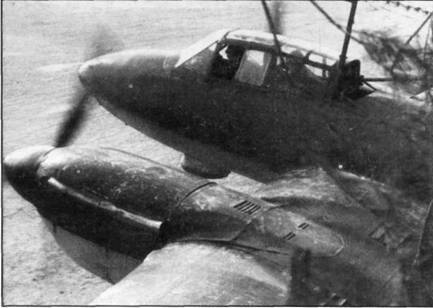
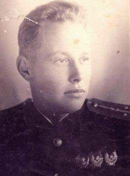
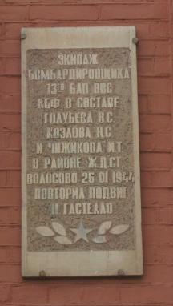
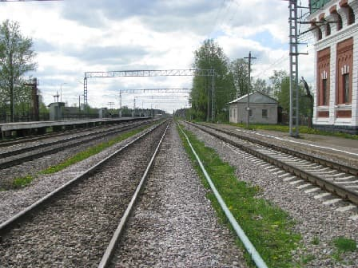

Авиабомбардировки Волосово
В январе 1944 года Красная армия стремительно наступала, чтобы сорвать организованный отход немецкой армии к заранее подготовленному укрепрайону – Линия Пантеры в Эстонии. Немецкая армия пыталась активно сопротивляться, прикрывая отступление.
Волосово – транспортный узел имеющий две железнодорожные ветки – на Нарву и Мшинскую (в то время существовала) и автодороги: одна кратчайшая на Нарву через Ополье и две выводящие на Таллинское шоссе - в Бегуницах и около Чирковиц.
Как следствие, первые яростно бомбили станцию, вторые огрызались бешенным зенитный огнем. И те и другие несли потери.
Бомбардировка станции и исходящих дорог велась силами 73-го бомбардировочного авиаполка краснознаменного Балтийского флота пикирующими бомбардировщиками Пе-2. Полк, традиционно действующий на море, получил задание наносить бомбовые и штурмовые удары по эшелонам на станциях Елизаветино и Волосово в первых числах января.
25 января, прикрывая бомбардировщики в районе Волосово в воздушном бою погиб летчик-истребитель старший лейтенант Анатолий Георгиевич Ломакин (23 года). Вернувшиеся, летчики бомбардировщиков узнали о присвоении ему 22 января звания героя Советского Союза. Имя А.Г.Ломакина носит одна из улиц в пос. Кикерино. По официальным данным похоронен в пос. Мурино Всеволожского района на братском кладбище летчиков краснознаменного балтийского флота, однако Василий Георгиевич Митрофанов в своей книге "С крылатыми героями Балтики" пишет, что упорные двухнедельные поиски Ломакина не дали результата, никаких следов самолета и пилота обнаружено не было. В 88% случаев следы падения самолета находили, в 12% - нет. Это вполне объяснимо - леса тут труднопроходимы, болота необъятны. Сам был свидетелем следов падения самолета, вспоровшего болотный мох в месте далеком от людских троп.

26 января из атак на станцию Волосово не вернулись три экипажа Пе-2 из десяти: гвардии капитана Голубева, гвардии лейтенанта Меняйлова и гвардии лейтенанта Майорова. В момент бомбардировки пошел снег и самолеты были вынуждены не пикировать, а сбрасывать бомбы на бреющем полете с высоты около 70 метров. По свидетельству очевидцев, можно было рассмотреть лица летчиков. Разумеется, с такой высоты прыжок с парашютом невозможен.
Экипаж Майорова успешно отбомбился по станции, но был подбит зенитным огнем. Горящий бомбардировщик сделал попытку сесть на опушку леса, но зацепил крылом дерево в последний момент. В результате удара о землю погибли пилот Лев Майоров и штурман Валентин Шульц. Стрелок-радист Василий Корнеев чудом остался жив, перешел линию фронта и вернулся в полк.
Экипаж в составе: командира Федора Никифоровича Меняйлова, штурмана Семена Константиновича Лисова и стрелка радиста Петра Федоровича Симоненко получил задание командира эскадрилии действовать самостоятельно на участке дороги Волосово- Молосковицы, где обнаружил и разбомбил автоколонну, но ответным огнем бомбардировщик был сбит. С большим трудом удалось посадить машину на окраину леса. Экипаж, вооружившись пулеметом ШКАС, с боем добрался до своих.
Экипаж командира эскадрилии Голубева погиб в полном составе:
пилот - гвардии капитан Василий Сергеевич Голубев, (30 лет)
штурман гвардии лейтенант Николай Степанович Козлов, (22 года)
стрелок-радист гвардии младший лейтенант Иван Тимофеевич Чижиков. (30 лет)
Отбомбившись, самолет начал набирать высоту, уходя в облачность, но загорелся и, снижаясь, упал в районе Красной Мызы (по прямой 17 км от Волосова). Там, на кладбище, местные жители похоронили летчиков.
На территории станции расположена водонапорная башня, 1905-го года постройки.Служила для заправки водой паровозов. Сегодня она украшение станции, а тогда служила ориентиром для атакующей авиации. На ней мемориальная доска.

Надпись на доске сообщает о повторении подвига Гастелло. Это неправда.
О падении самолета в Красной Мызе пишет в своей книге "В небе Балтики" один из пилотов-однополчанин Андрей Филиппович Калиниченко.
То же подтверждают записи объединенной базы данных "Мемориал".
Получается, смерть в бою недостаточна для увековечения памяти. Усилить хочется.
По рассказам свидетелей, переживших русские авианалеты, находиться под бомбами невыносимо. Не только из за крови и разрушений, но еще из-за тяжелейшего морально-психологичесского состояни.
Когда-то на станции рвались бомбы, горели вагоны, душила пороховая гарь, харкали зенитки, расколялся воздух, витал ужас.
Зато теперь истомное спокойствие и тишина.
